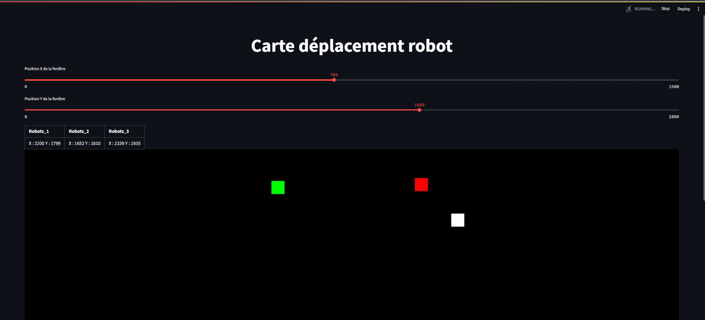
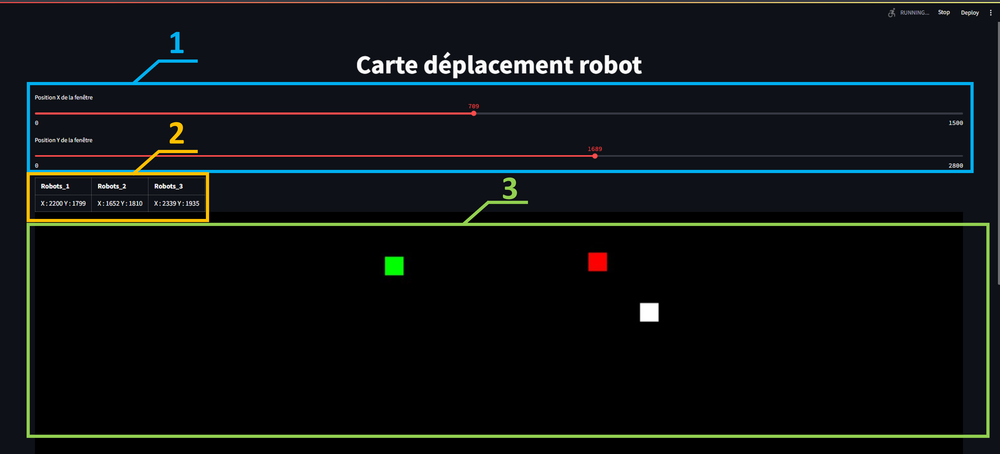
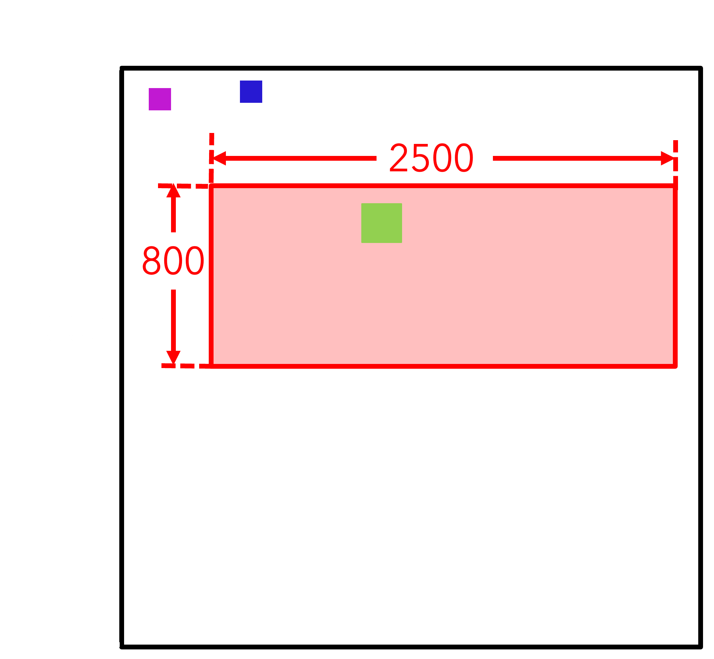
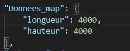
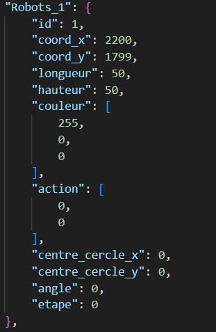
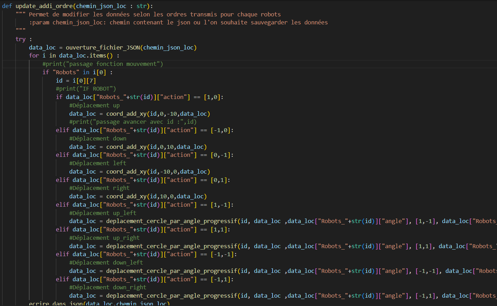
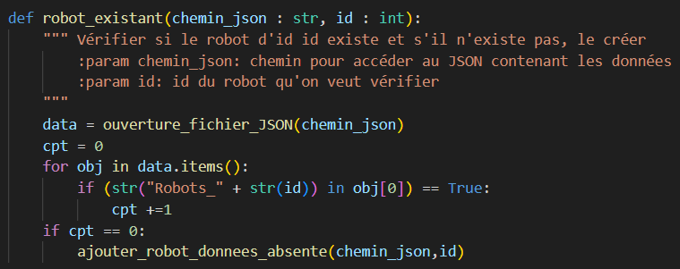
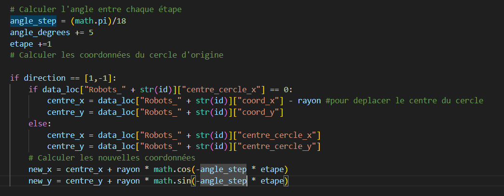

Index Contenu
I. Présentation et objectif de la partie Streamlit
Afin de visualiser la position des robots, on va créer une interface homme-machine sur Python avec la bibliothèque Streamlit. Le but est donc de représenter la position des robots, de façon exacte pour ceux qui renvoient les bonnes données et de façon approximative pour ceux qui n’en renvoient pas. Les données vont être envoyés par socket depuis la partie controller. Elles ont un format particulier mais nous y reviendrons plus tard. Les données et informations seront stockés dans un fichier JSON et de plus amples informations sur la manière dont ils sont stockés seront données.
II. Interface Streamlit
Streamlit est une bibliothèque sur Python qui permet de créer une application interactive de données sur web. L’utilisation a été choisi par notre responsable de projet aux Mines de Nancy et est donc obligatoire. Une fois lancé, l’application se lance dans le navigateur et ressemble à cela :

Exemple du résultat final sur navigateur
Il y a trois grandes parties à expliquer dans application :

Décomposition de l'application
Nous allons commencer par parler de la partie 3. Il s’agit de l’affichage de la carte virtuelle avec les carrés de couleurs qui correspondent chacun à un robot. La spécificité de la carte virtuelle est que l’affichage que l’on voit ne représente qu’une partie de la carte. Ce schéma permet de mieux comprendre comment cela est gérer :

Fonctionnement carte virtuelle
La partie rouge correspond à la partie de la carte que l’utilisateur peut observer, ce qui signifie que certains robots peuvent être hors vision. Il faut donc pouvoir se déplacer sur la carte afin d’afficher la partie que l’on souhaite observer. Pour cela, il y a la partie 1 dans l’image 2. Il s’agit de 2 curseurs simples qui permet de modifier la valeur X et la valeur Y de l’affichage de la carte. En réalité c’est la position du pixel en haut à gauche qui est modifié et après la longueur et la largeur de la carte affichée est choisi dans le code. Enfin, la partie 2 de l’image 2 est un tableau qui indique pour chaque robot qui a été crée ces coordonnées. Les coordonnées des robots sont aussi affichées même s’ils sont hors carte.
III. Fichier JSON
Afin de garder en mémoire les données des différents robots, la solution d’utiliser un fichier JSON a été choisi. Les robots sont créés automatiquement par une fonction dans le programme, nous verrons en détail comment plus tard. Le fichier JSON est composé de deux types d’objets :
- Un objet pour définir la dimension de la carte :

Objet Map
Il n’y a que deux composantes « donnees_map », la longueur et la largeur totale de la carte
- Des objets robots :

Objets Robots
Les objets robots possèdent de très nombreux paramètres :
- "id" : L'identifiant unique du robot
- "coord_x" : La coordonnée X de la position du robot sur la carte (en pixels).
- "coord_y" : La coordonnée Y de la position du robot sur la carte (en pixels).
- "longueur" : La longueur du robot (en pixels).
- "hauteur" : La hauteur du robot (en pixels).
- "couleur" : La couleur du robot (soit en string "red","blue", etc soit en tuple (255,0,0)).
- "action" : Une liste qui décrit l'action actuelle du robot.
- "centre_cercle_x" : La coordonnée X du centre du cercle autour du robot pour tourner en cercle
- "centre_cercle_y" : La coordonnée Y du centre du cercle autour du robot pour tourner en cercle.
- "angle" : L'angle de rotation du robot (en degrés).
- "etape" : L'étape actuelle du robot dans son virage en cercle.
Ce fichier JSON peut être utilisé pour définir les paramètres initiaux des robots et de la carte, et ces données peuvent être modifiées au fur et à mesure que les robots effectuent des mouvements et des actions sur la carte.
Le paramètre action sert à donner quel ordre doit exécuter le robot et comment il doit se déplacer. Il s’agit d’une liste de la forme [a,b]. Son fonctionnement peut être expliqué avec cette image :

Explication déplacement
Les paramètres « centre_cercle_x », « centre_cercle_y », « angle » et « etape » ne sont utile que dans la fonction pour tourner en cercle qui sera expliquer plus tard.
IV. Fonctions importantes
- Update_addi_ordre

Il s’agit d’une fonction qui s’active à intervalle régulière et qui vérifie l’action enregistrés pour chaque robot dans le fichier JSON. Selon l’action, on lance une fonction pour déplacer le robot.
- Robot_existant

Cette fonction crée automatiquement l’objet robot dans le fichier JSON si celui-ci n’existe pas. Cette fonction est appelée quand une donnée est reçue depuis le socket.
- Deplacement_cercle_par_angle_progressif

Il s’agit d’une partie de la fonction qui permet de configurer les tournant en cercle. Il y a l’exemple ici du virage en avant vers la gauche. Si l’action est [1,-1] alors on commence par définir le centre du cercle qui servira pour tourner. Une fois cela fait, on modifie les coordonnées du robot en X et Y pour faire un mouvement en forme de cercle.
V. Connexion Socket
Afin de savoir quelles commandes sont envoyés au robot afin de les afficher sur la carte, on crée un socket. On paramètre streamlit comme étant l’hôte avec une adresse « 0.0.0.0 » et un port « 12345 ».
Les données sont reçues avec la bibliothèque pickle afin d’envoyer une liste. Les données reçues ont la forme [id, [action]]
« action » peut prendre plusieurs valeur et plusieurs formes. Soit « action » est de la forme [a,b] pour faire des mouvements soit une chaîne de caractères avec soit « exit » pour quitter la connexion soit « suppr » pour enlever un robot.
VI. Problèmes rencontrés
Durant les cinq semaines de projet, de nombreux problèmes ont été rencontrés vis-à-vis de streamlit et de la communication avec le controller. Un des premiers problèmes rencontrés a été le rafraichissement régulier de la page afin de modifier la carte virtuelle ainsi que le tableau de valeur. Streamlit ne permet pas de gérer se genre de choses et par conséquent il faut reconstruire l’objet régulièrement.
Il faut aussi faire attention aux données qui passe dans le socket. On avait un problème où à la connexion avec le controller, un robot avec un id vide était créé et faisait buguer tout le programme. Il faut donc vérifier que les données qui arrive sont bien conformes et possibles.
Il faut aussi appeler le script du programme de streamlit en subprocess car il tourne en boucle et empêche toute autres actions. C’est donc pour cela qu’il y a un fichier « main.py » qui contient le socket et qui appelle le script « page_streamlit.py ». La très grande majorité des fonctions sont dans un fichier « fonction_projet.py ».
VII. État actuelle du projet et améliorations
La partie streamlit est actuellement fonctionnelle, elle permet de visualiser la position de plusieurs robots (jusqu’à 10), de visualiser leur différent mouvement en même temps, d’afficher les coordonnées dans le tableau et de se connecter à un controller. Afin d’améliorer la partie streamlit du projet, de nombreux ajouts et améliorations sont possibles. La première chose à faire pour pouvoir l’utiliser pleinement est de créer une échelle entre le nombre de pixels et les dimensions réels pour avoir des tailles de robots qui soient proches de la réalité et que leur déplacement le soit aussi.
Il faudrait donc retester tous les déplacements afin de vérifier l’échelle. Il faudrait aussi faire une fonction qui crée le fichier JSON s’il n’existe pas par défaut.
Certains robots envoient retournent directement des coordonnées, il faut donc pouvoir les recevoir, les lire et les utiliser. Cela signifie aussi qu’il faut pouvoir avoir plusieurs connexions de socket en même temps ce qui n’est pas pour l’instant le cas.
De nombreuses autre choses sont possibles. Il faut aussi suivre les modifications fait sur les autres parties du projet afin d’avoir une correspondance.